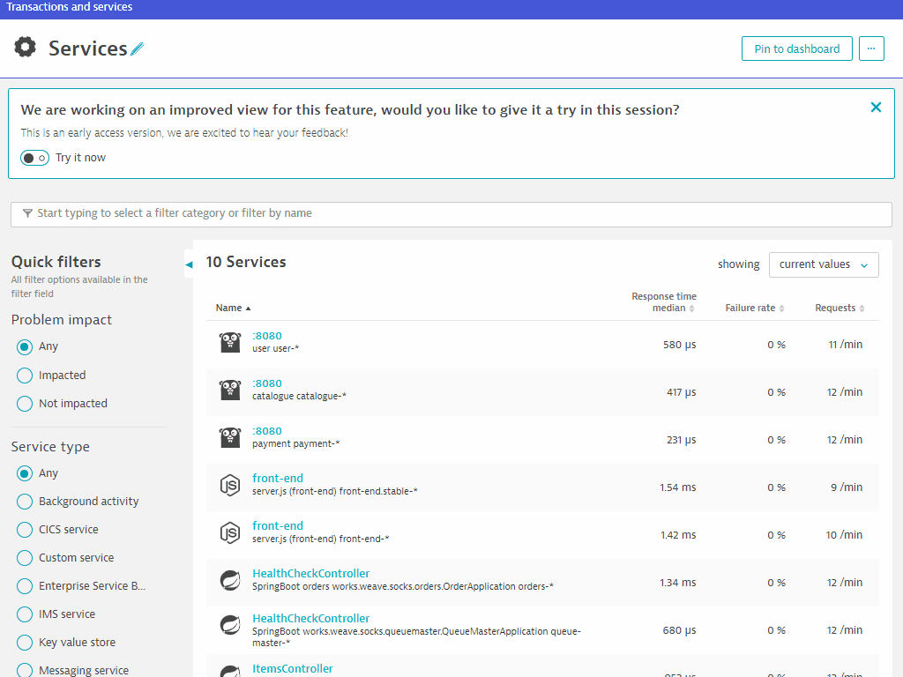
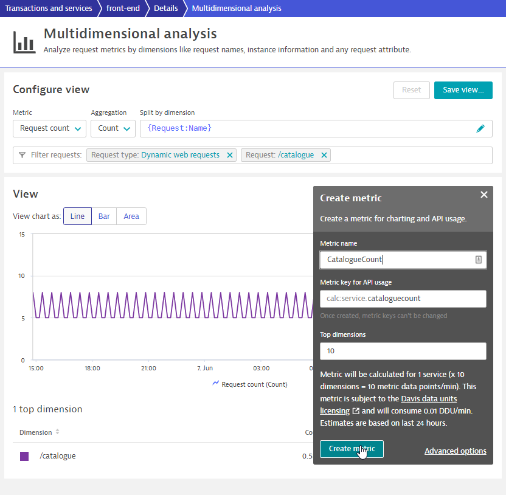
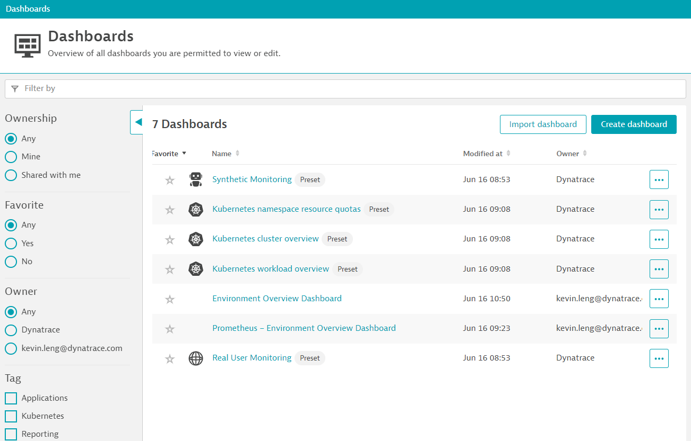
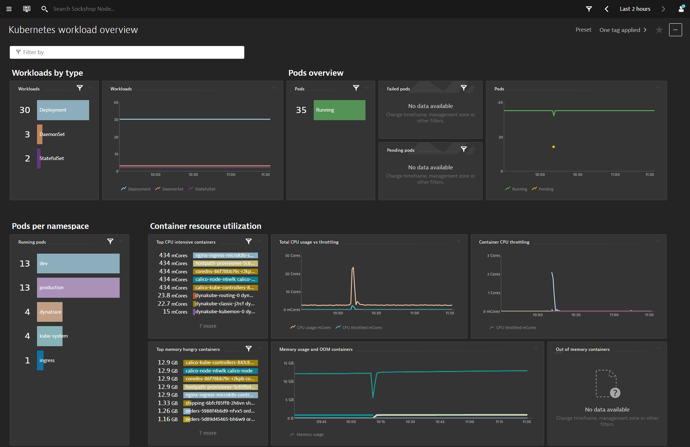
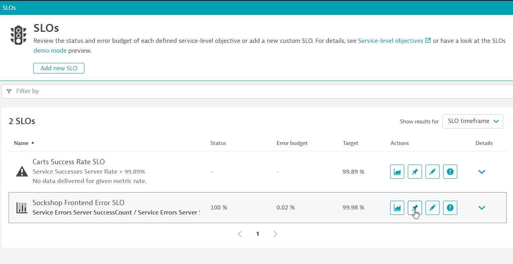
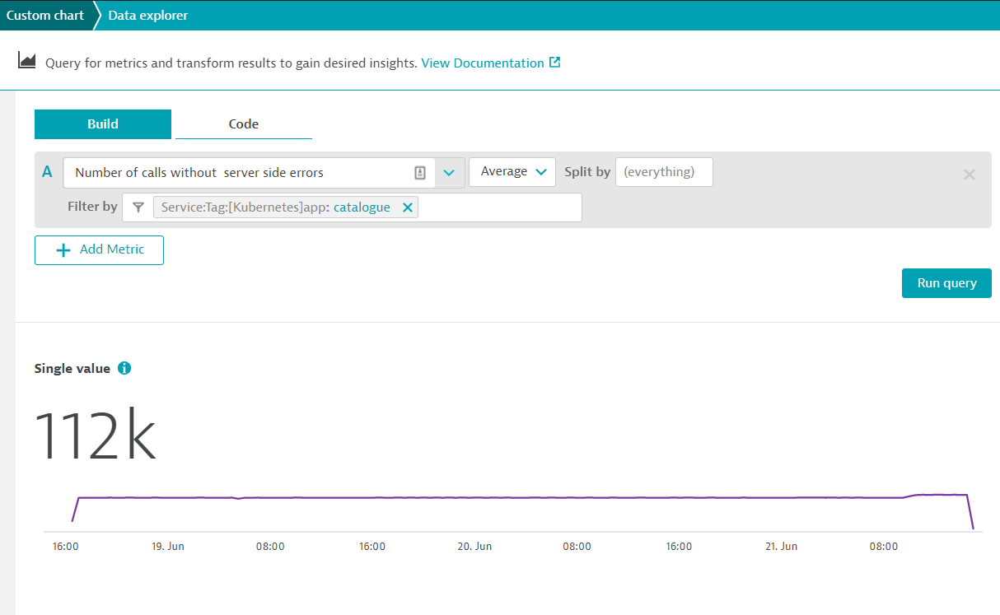
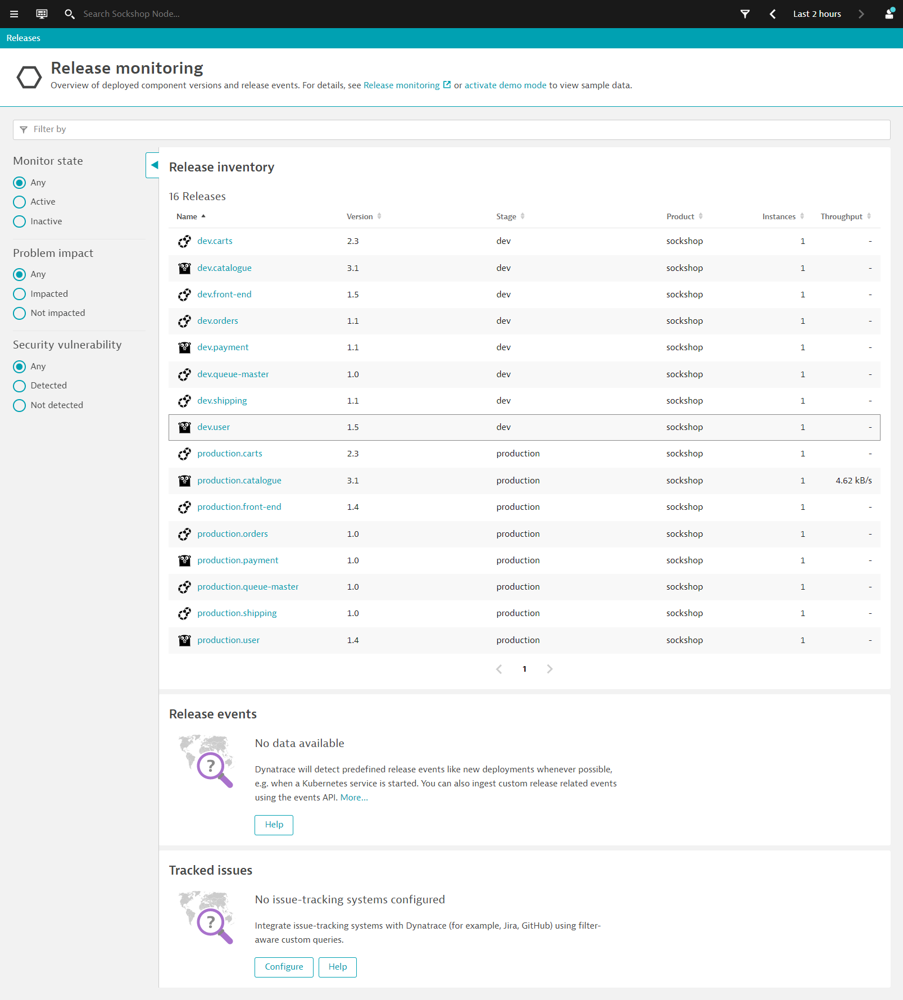
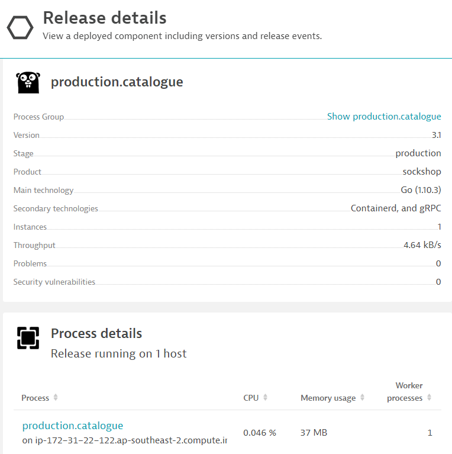

このリポジトリには、「Day 2 Operations - Cloud Native Observability Workshop」のハンズオンが含まれています。
事前準備
セットアップ
このラボでは、以下のサンプルアプリケーションを使用します。
- サンプルアプリケーション
学習内容
- OneAgentをKubernetes/Microservice環境に導入する
- GitOps／Monitoring as Codeアプローチによるアプリケーション設定のプッシュ
- メトリクス・インジェスチョンを学ぶことで、すべてのエンティティのベースラインを自動化することができます。
- サイトリライアビリティエンジニアリング - サービスレベル目標
- サイト・リライアビリティ・エンジニアリング - リリース
この演習では、Kubernetes(Microk8s)を実行しているLinuxインスタンスにOneAgentをデプロイし、そのインスタンスで実行されているものをOneAgentに発見させます。
Webブラウザでターミナルを使う
実験を円滑に進めるために、LinuxインスタンスにWebブラウザを介したターミナルでアクセスします。
メールに記載されているURLを使用して、SSHターミナルにアクセスします。URLが Public IP Address:8080/wetty のようになっていることを確認してください。
メールに記載されているログイン名とパスワードを使用します。

OneAgentのダウンロード
ブラウザを開き、DynatraceのURLにアクセスします。
以下の手順で行います。
- ナビゲーションメニューから Dynatrace Hub を選択します。
- Kubernetes を選択します。
- 右下の Monitor Kubernetes ボタンを選択します。

Monitor Kubernetes / Openshift**ページ内で、以下の手順を行います。
- 接続の名前を入力してください 例：
k8s - Create tokensをクリックして、適切なパーミッションでPaaSトークンとAPIトークンを作成します。
- Toggle ON Skip SSL Certificate Check
- Copy ボタンをクリックして、コマンドをコピーします。
- Copy ボタンをクリックしてコマンドをコピーしてください。 * Paste コマンドをターミナルウィンドウに貼り付けて実行してください。

例:
Connecting to github-releases.githubusercontent.com (github-releases.githubusercontent.com)|185.199.108.154|:443... connected.
HTTP request sent, awaiting response... 200 OK
Length: 7310 (7.1K) [application/octet-stream]
Saving to: ‘install.sh'
install.sh 100%[=====================================================>] 7.14K --.-KB/s in 0s
2021-06-01 05:46:36 (40.7 MB/s) - ‘install.sh' saved [7310/7310]
Check for token scopes...
Check if cluster already exists...
Creating Dynatrace namespace...
Applying Dynatrace Operator...
Warning: apiextensions.k8s.io/v1beta1 CustomResourceDefinition is deprecated in v1.16+, unavailable in v1.22+; use apiextensions.k8s.io/v1 CustomResourceDefinition
customresourcedefinition.apiextensions.k8s.io/dynakubes.dynatrace.com created
serviceaccount/dynatrace-dynakube-oneagent created
serviceaccount/dynatrace-dynakube-oneagent-unprivileged created
serviceaccount/dynatrace-kubernetes-monitoring created
serviceaccount/dynatrace-operator created
serviceaccount/dynatrace-routing created
podsecuritypolicy.policy/dynatrace-dynakube-oneagent created
podsecuritypolicy.policy/dynatrace-dynakube-oneagent-unprivileged created
podsecuritypolicy.policy/dynatrace-kubernetes-monitoring created
podsecuritypolicy.policy/dynatrace-operator created
podsecuritypolicy.policy/dynatrace-routing created
role.rbac.authorization.k8s.io/dynatrace-dynakube-oneagent created
role.rbac.authorization.k8s.io/dynatrace-dynakube-oneagent-unprivileged created
role.rbac.authorization.k8s.io/dynatrace-kubernetes-monitoring created
role.rbac.authorization.k8s.io/dynatrace-operator created
role.rbac.authorization.k8s.io/dynatrace-routing created
clusterrole.rbac.authorization.k8s.io/dynatrace-kubernetes-monitoring created
clusterrole.rbac.authorization.k8s.io/dynatrace-operator created
rolebinding.rbac.authorization.k8s.io/dynatrace-dynakube-oneagent created
rolebinding.rbac.authorization.k8s.io/dynatrace-dynakube-oneagent-unprivileged created
rolebinding.rbac.authorization.k8s.io/dynatrace-kubernetes-monitoring created
rolebinding.rbac.authorization.k8s.io/dynatrace-operator created
rolebinding.rbac.authorization.k8s.io/dynatrace-routing created
clusterrolebinding.rbac.authorization.k8s.io/dynatrace-kubernetes-monitoring created
clusterrolebinding.rbac.authorization.k8s.io/dynatrace-operator created
deployment.apps/dynatrace-operator created
W0601 05:46:39.025776 29593 helpers.go:553] --dry-run is deprecated and can be replaced with --dry-run=client.
secret/dynakube configured
Applying DynaKube CustomResource...
dynakube.dynatrace.com/dynakube created
Adding cluster to Dynatrace...
Kubernetes monitoring successfully setup.
$
Deployment statusでインストールを検証する
Show deployment statusをクリックして、接続されているホストの状態を確認します。
下の画像のように、接続されたホストが表示されているはずです。

Sockshopアプリケーションの再起動
サンプルアプリSockshopを再起動するには、以下のコマンドを実行します。
kubectl delete po --all -n dev
kubectl delete po --all -n production
Sockshopアプリケーションの探索
Dynatrace上で、以下の手順でSockshopのURLを取得します。
- OneAgent のデプロイ画面で hostname をクリックします。
- ホストビューで hostname を展開します。
- メタデータからパブリックホスト名をSelect and Copyします。
- the Public Host name を以下の形式に合わせて修正します。
- Sockshop Production
http://production.front-end.PUBLIC-IP.nip.io/ - Sockshop Dev
http://dev.front-end.PUBLIC-IP.nip.io
- Sockshop Production
Smartscapeを探る
Easy Travel の起動を待っている間に、Dynatrace を探索し、Smartscape を使用して、Dynatrace が Easy Travel アプリケーションを構成するプロセスと依存関係を自動的に発見することができます。
Dynatraceの4つの魅力をご紹介します。

この演習では、Dynatrace環境の設定を自動化します。
Dynatrace Monitoring as Code (Monaco)を使うと、人の手を介さずに、グローバルなDynatrace環境すべての設定を自動化することができます。様々な使用例があります。
- 複数の環境で再利用できるように構成をテンプレート化する機能を持つこと。
- コンフィグレーション間の相互依存性を、一意の識別子を追跡することなく処理すること。
- 同じコンフィグレーションを何百ものDynatrace環境に簡単に適用・更新できる機能を導入し、特定の環境にロールアウトできるようにする。
- アプリケーション固有の構成をある環境から別の環境へと促進するための簡単な方法を特定し、開発からハードニング、本番までのデプロイメントを追跡します。
- プルリクエスト、マージ、承認など、gitベースのワークフローのすべてのメカニズムとベストプラクティスをサポートする。
- 設定は、開発からハードニング、本番へのデプロイメント後に、ある環境から別の環境へと簡単に移行できなければなりません。
セッションを円滑に進めるために、monacoのコードを以下のように実行することができます。
cd sockshop
./deploy-monaco.sh
設定後、DT_TENANTとDT_API_TOKENとDT_DASHBOARD_OWNERの変数を設定します。 これらは、ラボの登録メール内に記載されています。
export DT_TENANT= https://mou612.managed-sprint.dynalabs.io/e/<ENV>
export DT_API_TOKEN=dt0c01.IH6********************************************
export DT_DASHBOARD_OWNER=<your email address>
設定後、以下のコマンドを実行してDynatraceの設定を行います。
./push-monaco.sh
以下の設定を行いました。
- シンセティック・モニタリング
- サービスネーミングルール
- カートSLO
- アプリケーション定義
- ダッシュボード
- プロセスのネーミングルール
- 管理ゾーン
この演習では、基本的なサービスレベル目標(SLO)の設定について説明します。これらの目標は、ビジネスのサービスレベル合意（SLA）を満たすために測定されたサービスレベル指標（SLI）の目標に基づいています。
SLOの作成
左側のナビでService level objectives > Add new SLOに進みます。
ここでは、Sockshop FrontendのSLOを作成します。以下のように使用します。
- このSLOに名前を付けます：
Sockshop Frontend Error SLO（ソックスショップフロントエンドエラーSLO - Select tab Calculate success rate using two metrics （2つのメトリクスを使って成功率を計算する）。
- numerator ドロップダウンで、
builtin:service.errors.server.successCountを使用します。 - 選択したフィールドをクリックします - number of calls without server side errors
- denominator ドロップダウンでは、
builtin:service.requestCount.serverを使用します。 - 選択されたフィールドをクリックします - Request count - server
- Next をクリックしてください。
- Entity selector で、
type("SERVICE"),tag("[Kubernetes]tier:frontend"),tag("[Kubernetes]stage:prod")を使用します。 - Preview をクリックしてください。
- front-end.production の 1 entityID が選択されているはずです。
- Next をクリックしてください。
- Failure, Warning, Good にはデフォルトのしきい値を使用します。
- Timeframeに
-1hを使用します。 - Save をクリックしてください。

この演習では、事前にサービスレベル目標（SLO）を設定する方法を説明します。この目標を達成するためには、まずカスタム指標を作成し、次に測定されたサービスレベル指標（SLI）をターゲットにして、ビジネスのサービスレベルアグリーメント（SLA）を達成する必要があります。
カタログページのメトリクス作成
次に、カタログページへのリクエスト成功数のカスタム指標を作成します。
- 左側のナビで、
Transactions and servicesに移動します。 front-endservice をクリックしてください。- View dynamic requests をクリックしてください。
- スクロールダウンして、/catalogueリクエストで、graphアイコンを選択します（Create analysis view）。
- Metric の下で、Successful request count を選択します。
- Create metric をクリックします。
- * Metric name の下で、
cataloguesuccesscountを使用します。 - Create metric をクリックしてください。

- Metric の下のドロップダウンメニューで、request count を変更して選択します。
- Create metric をクリックしてください。
- Metric nameのところで、
cataloguecountとします。 - Create metric をクリックしてください。

カタログ掲載用SLOの作成
- このSLOに名前を付ける：
Catalogue Availability SLO。 - Select tab Calculate success rate using two metrics （2つのメトリクスを使って成功率を計算する）。
- numerator ドロップダウンで、
calc:service.cataloguesuccesscountを使用します。 - 選択されたフィールドをクリックしてください - Catalogue Success Count 。
- denominator ドロップダウンでは、
calc:service.cataloguecountを使用します。 - 選択されたフィールドをクリックしてください - Catalogue Count * 選択されたフィールドをクリックしてください。
- Next をクリックしてください。
- 次へをクリックしてください
- Failure には
85を使用してください。 - Warning には
90を使用してください。 - Timeframeには
-15mを使用してください。 - Save をクリックしてください。
左のナビゲーションバーを参照し、Dashboardsに進みます。Dynatraceには、Kubernetes DashboardsやReal User Monitoringといったダッシュボードのテンプレートがあらかじめ用意されています。
モナコのロールアウトの一環として、以下のようなダッシュボードも作成されています。 Environment Overview DashboardとPrometheus - Environment Overview Dashboardです。

それぞれのダッシュボードにドリルダウンして、アプリオーナーやビジネスユーザー向けの様々なダッシュボードウィジェットをご覧いただけます。

SLOウィジェットの追加
これから、作成した新しいSLOに基づいて、新しいSLOウィジェットを追加します。
左のナビで、Service level objectivesに進みます。
pin iconを使って、Environment Overview Dashboardに固定することができます。

カスタム・メトリック・ウィジェットの追加
環境概要ダッシュボードの中で、編集**をクリックします。
カスタム・チャート」ウィジェットをダッシュボードにドラッグし、「カスタム・チャートの設定」をクリックします。
Number of calls without server side errorsmetric を使用します。- Filter by で、
Service: Tag: [Kubernetes]app: catalogを使用します。 - Run Query をクリックしてください。
- Single Value などの他の可視化方法も使用可能です。
- Pin to dashboard をクリックし、Environment Overview Dashboard を選択します。

CODEでカスタムメトリックウィジェットを追加する
ダッシュボード・ビューに戻り、新しく作成したウィジェットをクリックして、別のカスタムチャートをクローン化します。
新しいウィジェットで、カスタムチャートを設定をクリックします。
データエクスプローラービューに戻り、以下のようにします。
- Code タブをクリックしてください。
- 以前のカスタム・メトリック・ウィジェットと同等の Code が表示されます。
- テキストを
((calc:service.cataloguesuccesscount) / (calc:service.cataloguecount)) * (100)に修正します。 - これは、成功したカタログ数のpercentage of the successful catalogue counts。
- 左側のSettingsで、thresholdを以下のように変更します。
- 🟩 -
15 - 🟨 -
10 - 🟥 -
5
- 🟩 -
- Run query をクリックします。
- Pin to dashboard をクリックし、Environment Overview Dashboard を選択します。

また、Dynatraceにはリリース分析ソリューションが組み込まれており、導入したアプリケーションのバージョンやステージを判断するのに役立ちます。
左のナビでReleasesに移動します。

これは、展開されたコンポーネントのバージョンとそのリリースイベントの概要を示しています。
各コンポーネントの詳細を見ると、それぞれのコンポーネントの追加メタデータが表示されます。 これにより、監視対象のコンポーネントのコンテキストや、コンポーネントのライフサイクルおよび問題の追跡に関する情報が提供されます。

このラボを楽しんでいただき、お役に立てれば幸いです。ご意見、ご感想をお待ちしております。